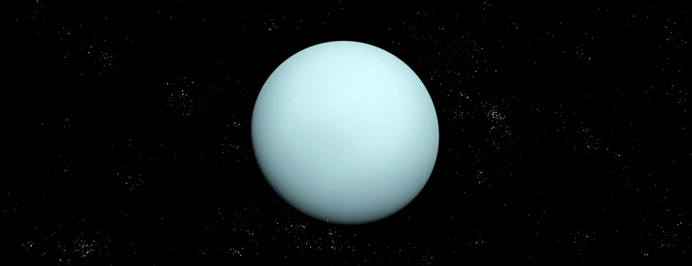

首页
太阳系
地球
月球
太阳
金星
水星
火星
土星
木星
海王星
小行星世界
太阳系边缘
纵览太阳系
返回

天王星｜URANUS
天王星是太阳系八大行星中的第七个行星.
是太阳系中唯一躺着运转的行星。
天王星与太阳的距离已经非常遥远了，太阳光从太阳发出到达天王星需要经过2.7小时之久。
天王星绕行太阳则需要约84年才能绕完一圈。
天王星是类木行星之一。
天王星
深入探索
天王星的 3D 模型，太阳系最冷的行星。
用鼠标拖动试试
Source: NASA Visualization Technology Applications and Development (VTAD)
质量 ：8.681✕1025 kg（±0.0013）
直径 ：50724 km
与太阳的平均距离：大约30亿公里
公转周期：84个地球年